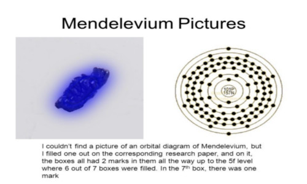

Later Life
Antara 1859 dan 1861, ia bekerja pada kapilaritas cairan dan cara kerja spektroskopi di Heidelberg. Kemudian pada tahun 1861, ia menerbitkan buku teks bernama Kimia Organik.Ini memenangkannya Hadiah Demidov dari Akademi Ilmu Pengetahuan Petersburg.
Pada 4 April 1862 dia bertunangan dengan Feozva Nikitichna Leshcheva, dan mereka menikah pada 27 April 1862 di gereja Institut Teknik Nikolaev di Saint Petersburg (tempat dia mengajar).

Mendeleyev dan Feozva
Mendeleyev menjadi profesor di Institut Teknologi Saint Petersburg dan Universitas Negeri Saint Petersburg pada tahun 1864,dan 1865, masing-masing. Pada tahun 1865 ia menjadi Doktor Ilmu untuk disertasinya "Pada Kombinasi Air dengan Alkohol". Ia mencapai masa jabatan pada tahun 1867 di Universitas St. Petersburg dan mulai mengajar kimia anorganik, sambil menggantikan Voskresenskii ke pos ini dan pada 1871 ia telah mengubah Saint Petersburg menjadi pusat penelitian kimia yang diakui secara internasional.
Pada tahun 1876, ia menjadi terobsesi dengan Anna Ivanova Popova dan mulai memeluknya pada tahun 1881 dia melamarnya dan mengancam akan bunuh diri jika dia menolak. Perceraiannya dari Leshcheva diselesaikan satu bulan setelah dia menikah dengan Popova (pada 2 April) pada awal 1882. Bahkan setelah perceraian, Mendeleyev secara teknis seorang bigamist; Gereja Ortodoks Rusia membutuhkan setidaknya tujuh tahun sebelum menikah kembali secara sah. Perceraiannya dan kontroversi sekitarnya berkontribusi pada kegagalannya untuk diterima di Akademi Ilmu Pengetahuan Rusia (meskipun ketenaran internasional pada saat itu). Putrinya dari pernikahan keduanya, Lyubov, menjadi istri penyair Rusia yang terkenal, Alexander Blok. Anak-anaknya yang lain adalah putra Vladimir (seorang pelaut, ia ambil bagian dalam perjalanan Timur Nicholas II yang terkenal) dan putri Olga, dari pernikahan pertamanya dengan Feozva, dan putra Ivan serta anak kembar dari Anna.

Anna Ivanova Popova
Meskipun Mendeleyev secara luas dihormati oleh organisasi ilmiah di seluruh Eropa, termasuk (pada tahun 1882) Medali Davy dari Royal Society of London (yang kemudian juga memberinya Medali Copley pada tahun 1905),ia mengundurkan diri dari Universitas Saint Petersburg pada 17 Agustus 1890. Dia terpilih sebagai Anggota Asing Royal Society (ForMemRS) pada tahun 1892,dan pada tahun 1893 ia diangkat sebagai direktur Biro Bobot dan Ukuran, sebuah jabatan yang ia duduki hingga kematiannya.
Mendeleyev juga menyelidiki komposisi minyak bumi, dan membantu menemukan kilang minyak pertama di Rusia. Dia mengakui pentingnya minyak bumi sebagai bahan baku untuk petrokimia. Dia dikreditkan dengan komentar bahwa membakar minyak bumi sebagai bahan bakar "akan sama dengan menyalakan kompor dapur dengan uang kertas".
Pada tahun 1905, Mendeleyev terpilih menjadi anggota Akademi Ilmu Pengetahuan Kerajaan Swedia. Tahun berikutnya Komite Nobel untuk Kimia merekomendasikan Akademi Swedia untuk memberikan Hadiah Nobel Kimia untuk 1906 kepada Mendeleyev untuk penemuan sistem periodik. Bagian Kimia dari Akademi Swedia mendukung rekomendasi ini. Akademi kemudian seharusnya menyetujui pilihan Komite, seperti yang telah dilakukan di hampir setiap kasus. Tanpa diduga, pada pertemuan penuh Akademi, seorang anggota Komite Nobel yang tidak setuju, Peter Klason, mengusulkan pencalonan Henri Moissan yang ia sukai. Svante Arrhenius, meskipun bukan anggota Komite Nobel untuk Kimia, memiliki banyak pengaruh di Akademi dan juga mendesak untuk penolakan Mendeleyev, dengan alasan bahwa sistem periodik terlalu tua untuk mengakui penemuannya pada tahun 1906. Menurut orang sezamannya, Arrhenius dimotivasi oleh dendam yang ia pegang terhadap Mendeleyev atas kritiknya terhadap teori disosiasi Arrhenius. Setelah perdebatan sengit, mayoritas Akademi memilih Moissan dengan selisih satu suara.Upaya untuk mencalonkan Mendeleyev pada tahun 1907 sekali lagi frustrasi oleh oposisi absolut dari Arrhenius.
Pada tahun 1907, Mendeleyev meninggal pada usia 72 di Saint Petersburg karena influenza. Kata-kata terakhirnya adalah kepada dokternya: "Dokter, Anda memiliki sains, saya memiliki keyakinan," yang mungkin merupakan kutipan Jules Verne.
Kawah Mendeleyev di Bulan, serta elemen nomor 101, radioaktif mendelevium, dinamai menurut namanya.

Fakta Mendelevium yang Menarik:
> Unsur ini pertama kali disintesis pada 19 Februari 1955, di University of California di Berkley oleh ilmuwan yang membombardir unsur einsteinium dengan partikel alfa.
> Glenn Seaborg, Albert Ghiorso, Gregory Choppin, Stanley Thompson, dan Bernard Harvey mensintesis elemen tersebut.
> Sampel pertama dari mendelevium hanya tujuh belas atom.
> Eksperimen yang diusulkan hanya menghasilkan satu atom pada saat sampel, dibuat dengan menghitung jumlah atom bahan yang diharapkan kali intensitas sinar ion yang digunakan, kali pembombardan per waktu paruh.
> Menggunakan teknik recoil Ghiroso, sampel pertama kali disintesis.
> Sementara kelompok ilmuwan tidak benar-benar mendeteksi sampel mendelevium, peristiwa fisi spontan yang dihasilkan sintesis menunjukkan keberadaannya dalam eksperimen.
> Ada enam belas isotop mendelevium yang diketahui.
> Isotop paling stabil adalah Md-258, yang memiliki paruh hanya 51,5 hari.
> Semua kecuali tiga isotop yang tersisa memiliki paruh kurang dari satu setengah jam.
> Sebagian besar dari isotop tersebut memiliki waktu paruh kurang dari lima menit.
> Mendelevium juga memiliki lima negara meta.
> Ini adalah elemen radioaktif yang membatalkan fisi spontan.
> Berdasarkan pengamatan partikel jejak, mendelevium diyakini dapat menciptakan logam divalen.
> Teori ini pertama kali diprediksi oleh Johansson dan Rosengren pada tahun 1975, hampir dua puluh tahun setelah mendelevium pertama kali diamati.
> Mendelevium adalah elemen pertama yang memungkinkan para peneliti untuk mengamati keadaan trivalen yang stabil dalam larutan air.
> Karena kelangkaannya, tidak ada aplikasi komersial yang diketahui untuk elemen tersebut.
Pembuat Situs